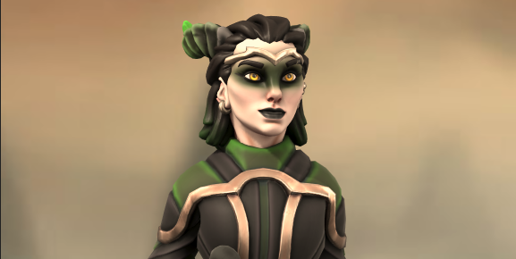

Clarisse's Backstory
When the Royal family of Lullin were discovered to be changelings, Clarisse had no choice but to flee. With a citywide witch hunt calling for blood, decisions had to be made quickly. She stole some peasant clothes and joined the riot for weeks until it died down. To keep a low profile, the bare ground became her mattress. Finally, the guards standing by the city gate started letting people in and out again, and she made her final escape. She had no clue if her parents and teenage brother were safe but it was unlikely she would ever see them again anyway.
The day she left her hometown was the day she decided that life was too short. Her blonde hair became black and green. Her dresses became armour. The book at her hip became a sword. The only thing that stayed the same for her was her rose-gold crown that brushed her eyebrows, reminding her of what once was and what she planned to take back.
Fourteen Questions
- What’s your favourite meal?
- - Steak. Juicy, bloody and delicious.
- What’s your favourite snack
- - Cookies, the softer the better
- What’s your favourite alcoholic drink?
- - Irish Coffee. No idea where it got its name but it's the only alcohol I can drink
- What’s your favourite non-alcoholic drink?
- - Blood (note: said with an amused glint in her eye)
- Any hobbies or pass times?
- - Magic tricks and makeup. Hey, what's that behi-
- Are you a morning or night person?
- - Night for sure. Who the hell would say morning?
- Any habits?
- - Some have claimed I am "loud" and "a coward". They are not to be believed.
- Preferred place to camp?
- - Anywhere there’s people around
- Ideal tavern?
- - Rowdy and gullible. For absolutely no reason other than gullible people love magic.
- First call when you reach a new town?
- - My signature public displays of tomfoolery. Being a Goddess isn't cheap, you know. Gotta make money somehow.
- Any fears?
- - No... Maybe...
- What's your favourite colour?
- - Green AND black. (note: refused to pick just one, claiming they are equally precious)
- What's your favourtite thing to fight?
- - People’s psyche. Or none, none is good too.
- What's your end goal?
- - Wouldn't you like to know.
Please note
While she claims to be a Goddess, she is not. However, her end goal is to become one one day.
Do be aware while talking to her, though, she can still be very tricky for a mortal